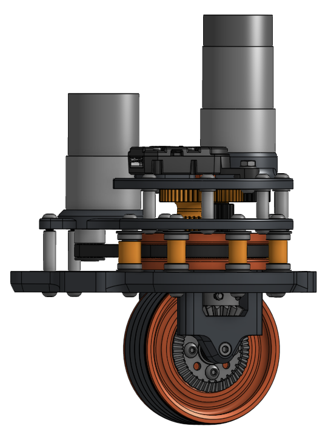
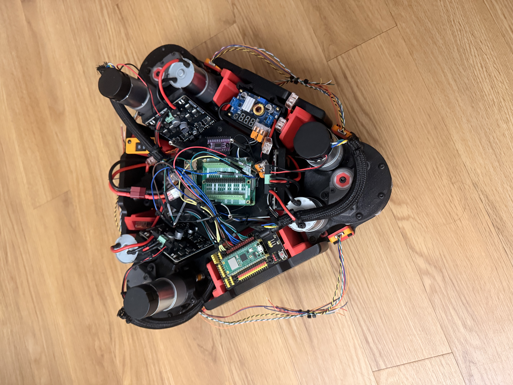

Drive and steering
Each 70 mm wheel has its own drive motor. A belt-reduced steering motor turns the pod, and a REV Through Bore Encoder V2 measures its actual angle.
Custom drivetrain / In development
I wanted a drivetrain that could move in any direction without making the robot feel awkward or overbuilt. This version uses three pods and a compact layout that should be easier to tune as I test it.

01 / System
With the pods spaced 120° apart, the robot can move in any direction or turn in place without the chassis feeling too crowded.

Each 70 mm wheel has its own drive motor. A belt-reduced steering motor turns the pod, and a REV Through Bore Encoder V2 measures its actual angle.
The control plan gives the Raspberry Pi Pico encoder feedback, PID, kinematics, and motor commands. A Raspberry Pi 4B takes on navigation and sensor processing.
Six GP2Y0E03 distance sensors connect through a TCA9548A I²C multiplexer. The planned 12 V power system uses protected distribution and buck converters for the lower-voltage electronics.
02 / Build log
The main steps so far, plus what comes next. I can add dates as I fill in the build history.
Date TBD
01I went with three pods spaced 120° apart to keep the chassis compact and leave a clear interface for attachments.
LayoutDate TBD
02The pods put drive and steering on a shared axis, with a belt reduction for steering. The chassis uses 70 mm wheels and 3D-printed, carbon-fiber-reinforced structure.
MechanicalDate TBD
03The plan is to let the Pico handle real-time motor control while the Pi runs higher-level tasks. Encoder and distance-sensor feedback will feed into that setup.
Electronics + controlDate TBD
04Next, I’ll test one pod under load, then check the full drivetrain and odometry. Vision and autonomous navigation can come later, once the basic controls are dependable.
Next / validation03 / Design choices
One fewer module means fewer motors, drivers, mounts, and wires. The tradeoff is less redundancy and more responsibility on each pod and its mounting points.
I chose the coaxial layout to keep the pods compact and leave the top plate open for interchangeable attachments.
The encoder reads the wheel's actual steering angle. That lets the controller account for belt flex or backlash instead of relying only on the motor's position.
04 / Next iteration
For now, I’m focused on making the drivetrain predictable. Good control and odometry need to come before vision or autonomous navigation.
Record steering response, backlash, belt slip, encoder accuracy, speed, current, and temperature. First goal: make the pod hit the same commanded angles reliably.
Test forward and sideways movement, diagonals, turns, and combinations. If the robot drifts, check the encoder offsets, module positions, and mechanical alignment.
Run straight lines, squares, circles, and figure eights, then compare the estimates with known distances. After that, check that the IR sensors can trigger a stop.
05 / Design study

